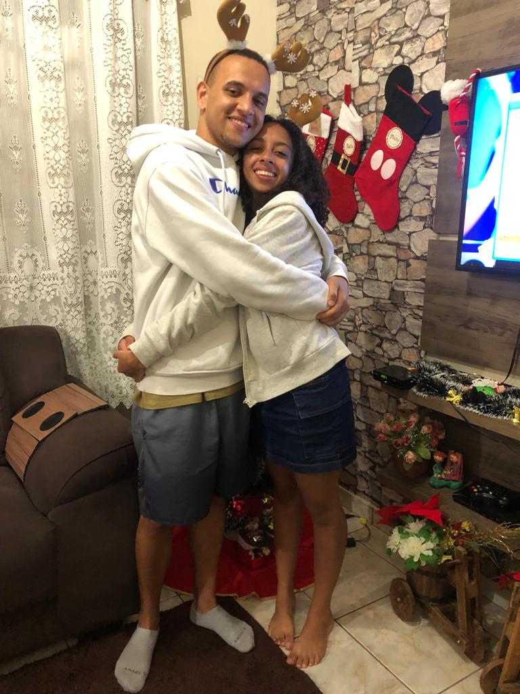
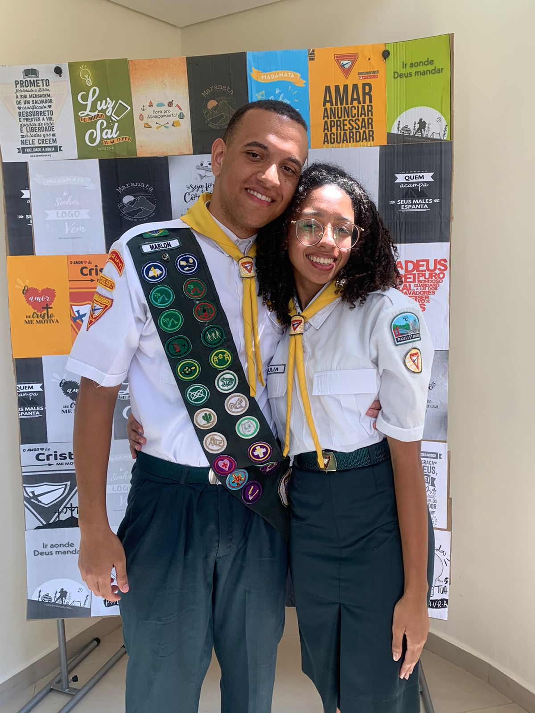
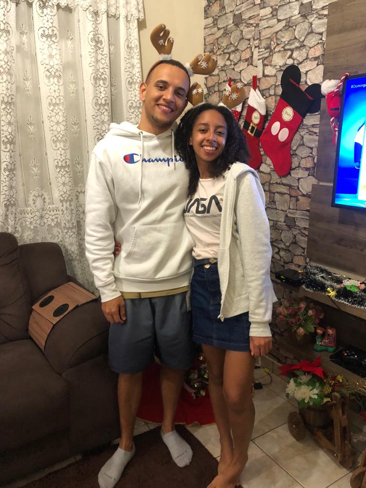

Como Tudo Começou...
Meu bem, este site foi criado com o intuito de preservar algumas lembranças que tenho de nós. É claro, ele nunca substituirá o que realmente vivemos. Bom, me lembro que alguns meses antes de começar a falar com você, eu já a observava, pensando: ‘Será? Não sei, quem sabe um dia?’. Eu já te observava há algum tempo, mas nada sério. Admito que o pré-campori corroborou muito para eu passar a te ver com outros olhos e criar um pequeno sentimento por você. Os meninos ficavam em cima de mim questionando: ‘E aí, vai dar em alguma coisa?’, principalmente a Jessica, rsrsrs.

O Campori e a Coragem
Realmente, eu já estava amadurecendo a ideia em minha mente e, a partir daqui, comecei a criar coragem para convidar você para sair. Voltando um pouco no tempo, eu gostaria de ter começado algo já no campori, mas hoje vejo que não era o momento nem o lugar certo, e ainda por cima me entreguei com aquele bendito rádio. Bom, teremos boas histórias para contar para a posteridade. E hoje você sabe que toda aquela história da feirinha era uma enrolação, rsrsrs. No fim, não deu certo.

O Surto de Coragem
Pós-campori e eu ainda precisava criar essa tal coragem para chamar você para sair. Passei uns bons dias abrindo sua conversa no WhatsApp, mas não digitava nada. Até que, em um belo dia, me deu um surto de coragem e disse: ‘É hoje ou nunca’. E, por Deus, você aceitou. A partir daí, minha mente foi a mil. ‘E agora?’ – pensei. Infelizmente, você ficou doente. E fique tranquila, não imaginei que você estava me enrolando, mas essa situação só aumentou minha ansiedade, porque eu pensava: ‘Meu Deus, como vai ser? O que falar?’. Enfim, o dia chegou.

A Certeza
Vou comentar sobre o pós-saída. Caramba, saí com um ‘inchaço’ no coração e pensando: ‘Meu Deus, que mulher é essa’. Eu fiquei encantado com você, quase certo de que tinha encontrado a pessoa que tanto procurava. Até então, eu orava para Deus que Ele me desse uma namorada, mas depois desse dia eu pedia para Ele que fosse você. Pedia a Deus que meus sentimentos não me ‘cegassem’, mas que Ele me orientasse.

O Pedido de Namoro
Essa vai sem imagem. Meu bem, quando estava perto de te pedir em namoro, me lembro que em mim havia uma certa incerteza causada pelo medo. Eu perguntava a Deus: ‘Pai, será que devo realmente fazer isso?’ Hoje vejo que sim, meu bem, não me arrependo da escolha que fiz.
Digo que sou o homem mais feliz do mundo por ter a mulher que tanto procurei ao meu lado. Te amo do tamanho do universo (ouvi dizer que ele nunca parou de se expandir). Minha princesa, quero que essa seja apenas uma pequena demonstração do quanto amo você. Do quanto te admiro, do quanto torço por você, eu realmente sou seu fã número um.
Obrigado por me aceitar, obrigado por suportar minhas brincadeiras, obrigado por acalmar minha mente turbulenta, obrigado por ser minha melhor amiga, obrigado por ser minha parceira, obrigado por me amar.
Com amor,
Marlon S. de Souza